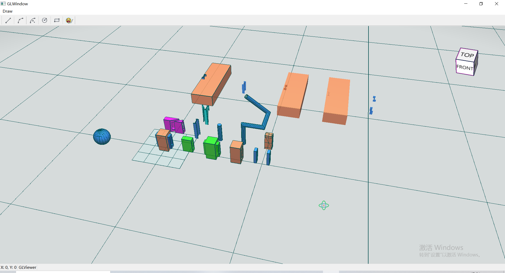
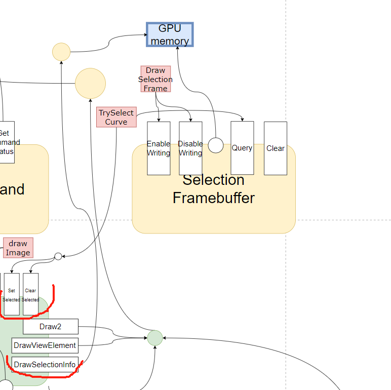
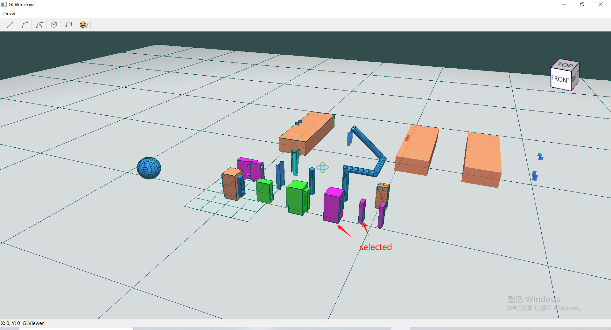

18.选中效果
18.1.优化着色器代码
在正式开启本节课程前，我们首先顺便做了如下事情，
- 将
initShader函数改造了下，能够初始化各个shader； - 我们更新了
m_lightShader对应的顶点着色器和片段着色器代码，在顶点着色器中正确变换顶点Normal和点光源位置FragPos，在片段着色器中考虑点光源射向片段的方向和片段法向的关系决定片段的漫反射颜色diffuse，进而影响片段颜色FragColor；
1.model_loading.vert:
#version 450 core
layout (location = 0) in vec3 aPos;
layout (location = 1) in vec3 aNormal;
//layout (location = 2) in vec2 aTexCoords;
//out vec2 TexCoords;
out vec3 FragPos;
out vec3 Normal;
uniform mat4 model;
uniform mat4 view;
uniform mat4 projection;
void main()
{
FragPos = vec3(model * vec4(aPos, 1.0));
Normal = vec3(model * vec4(aNormal, 0.0));
// TexCoords = aTexCoords;
gl_Position = projection * view * model * vec4(aPos, 1.0);
}
1.model_loading.frag：
#version 450 core
out vec4 FragColor;
//in vec2 TexCoords;
in vec3 Normal;
in vec3 FragPos;
//uniform sampler2D texture_diffuse1;
uniform vec3 lightPos;
uniform vec3 lightColor;
uniform vec4 objectColor;
void main()
{
// ambient
float ambientStrength = 0.3;
vec3 ambient = ambientStrength * lightColor;
// diffuse
vec3 norm = normalize(Normal);
vec3 lightDir = normalize(lightPos - FragPos);
float diff = max(dot(norm, lightDir), 0.0);
vec3 diffuse = diff * lightColor;
vec3 result = (ambient + diffuse) * objectColor.rgb;
FragColor = vec4(result, objectColor.a);
//FragColor = vec4(1.0f, 0.5f, 0.2f, 1.0f);//texture(texture_diffuse1, TexCoords);
}
别忘了良好的习惯，编译+运行，查看效果，

18.2.实现GPU Picking
概念和知识
- 颜色缓冲、深度缓冲和模板缓冲结合起来叫做帧缓冲(
Framebuffer)，它被储存在GPU内存中。OpenGL允许我们定义我们自己的帧缓冲，也就是说我们能够定义我们自己的颜色缓冲，甚至是深度缓冲和模板缓冲。 - 我们可以通过实现自定义颜色缓冲的
选择帧缓冲，来实现GPU选中。
我们通过创建选择帧缓冲来实现GPU Picking，由于帧缓冲存储在GPU的内存中，写入、读取、复制等操作效率非常高，基于此可以实现高效的选中功能。
我们新建了SelectionFramebuffer类用于选择帧缓冲的创建、释放、绑定、查询、读写控制等管理。在GLView中会通过离屏渲染的方式把组件绘制到选择帧缓冲上，之后通过鼠标点击事件查询选择帧缓冲中在此前写入的组件id信息，以判断哪些组件被选中了。
Attention
- 将组件绘制到
选择帧缓冲中同样会执行渲染管线，其顶点着色器一般和组件渲染到屏幕的顶点着色器一致，而通过在特有的片段着色器中控制对应位置片段（frag）颜色信息的写入，写入包含组件id的数据。 - 这样在后续通过像素位置调用
glReadPixels查询时，能够查询到对应位置在选择帧缓冲中的数据，进而判断是否有组件被选中。
我们来看下实现后选择功能相关函数的调用逻辑，
选择帧缓冲”接口调用逻辑" width="500" align="middle" style="display: block; margin-left: auto; margin-right: auto;"/>
GLView.DrawSelectionFrame，依赖SelectionFramebuffer.EnableWriting和DisableWriting实现，在每个渲染循环中调用，将GPU内存中的选择帧缓冲设置为当前绘制帧缓冲（想象一下状态机，更新了状态），然后调用Model.DrawSelectionInfo将携带构组件id信息的片段绘制到帧缓冲中，完成后解绑帧缓冲并将当前绘制帧缓冲切回为默认帧缓冲，也就是之后的绘制会绘制到GLView中；GLView.TrySelectCurve，当鼠标左键点击事件触发时调用，首先通过SelectionFramebuffer.Query查询当前像素位置对应的组件id信息，根据查询结果调用Model.SetSelected或ClearSelected，完成组件选中或清空选中。
补充
由于我们需要选择帧缓冲与GLView屏幕映射，这样才能通过GLView屏幕上的鼠标位置找到选择帧缓冲对应位置的组件信息，这就需要两者的尺寸保持一致，所以当GLView尺寸发生变化时，我们释放当前的帧缓冲并根据最新的GLView尺寸创建新的帧缓冲对象继续工作。
有了上述知识去详细的探究代码将会容易的多，带着好奇心去探究吧~
如果一切正常，或者遇到的问题被排查解决，那么运行之后的效果如下，有问题或疑问请查看工程代码或联系我。
